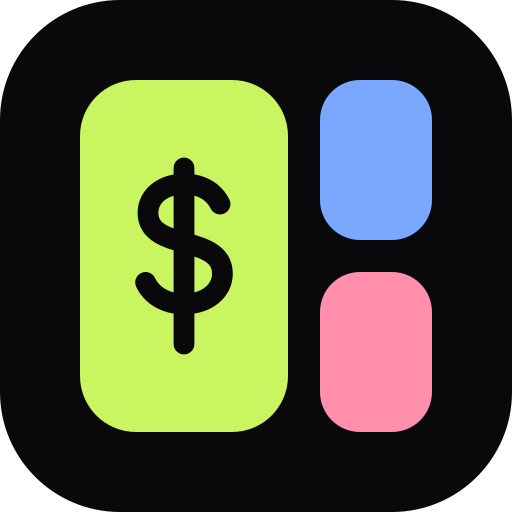

Mi Plata
App personal de Android para llevar las cuentas del día a día.
Qué hace
- Registra gastos, ingresos y transferencias entre tus cuentas (banco, billetera digital, efectivo, tarjeta de crédito).
- Separa plata en bolsillos y metas de ahorro, y te muestra cuánto te queda libre para gastar.
- Lleva tus pagos y deudas con fecha, y los gastos recurrentes como suscripciones.
- Widgets en la pantalla de inicio con tu saldo, bolsillos, próximos pagos y botones de gasto rápido.
Cómo usa tu cuenta de Google
Conectar Google es opcional. Si lo haces, Mi Plata:
- Google Drive: guarda una copia de tus datos en un archivo de tu propio Drive (carpeta "Mi Plata"). Solo puede ver los archivos que ella misma creó.
- Google Calendar: crea en tu calendario los recordatorios de los pagos que marques, y los borra si eliminas el pago.
- Google Sheets: exporta tus movimientos a una hoja de cálculo en tu Drive cuando tú lo pides.
No hay servidores de Mi Plata: todo pasa entre tu celular y tu cuenta de Google.